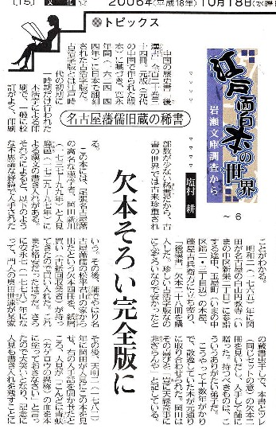

中国の歴史書「後漢書」全百二十巻三十四冊。元版（元代の中国で作られた版本）に基づき、寛永年間（一六二四−四四年）に日本で翻刻された古活字版だ。古活字版とは江戸時代の初期に一時期だけ行われた木活字による印刷で、一般に校訂がよく、印刷部数が少ない希書だから古書の世界では古来珍重される。
この本には尾張名古星藩の高名な漢学者、岡田新川（おだかしんせん（一七三七−九九年）と人見機邑（ひとみきゆう（一七二九一九七年）による漢文の書き入れがある。それらによると以下のような不思議な経緯で入手されたことがわかる。
明和二（一七六五）年に岡田が名古屋の白山円教寺（いまの中区新栄二丁目）に参詣する途中、玉屋町（いまの中区錦二・三丁目辺）の本屋、藤屋吉兵衛方に立ち寄り、「後漢書」欠本二十八冊を購入した。珍しい古活字版なのにふぞろいなので安かったという。
その後、師でやはり名古屋藩儒の松平君山（まつだいらくんざん）の家から出たという欠本四冊を紙屑買い（古紙回収業者）が持ってきたので買い入れた。これまた格安だったはずだ。さらに安永七（一七七八）年になって、門人の奥田世達（おくだせたつ）が某家の蔵書虫干しで、本書とツレ（同じセットの意）の欠本二冊を見いだし、入手して師に贈った。持つべきものは、こういうありがたい弟子だ。こうやって十数年がかりで、散逸していた本が元通りに取り合わされた。岡田はその喜びを
「豈に天縁奇事に非ざらんや」と記している。
その後 天明二（一七八二）年に岡田が人見にこの本を見せ、右の入手話を聞かせたところ、人見が「こんどは青[虫夫]（カゲロウの異称）の血を本に塗っておきなさい」と言ったので大笑いとなり、記念に人見も書き入れを残すことになったという。青[虫夫]という虫の母と子の血を別々に銭に塗っておくと、それをつかってもまた舞い戻ってきて元通りにそろうという中国の故事をふまえている。漢学者の冗談は難しい。
もしも清少納言が古本好きだったならば、「枕草子」に「嬉しきもの、欠本を取り合わせたる」とでも書き記したことだろう。しかもこの場合は完全にオリジナルのセットに復元しているのだから、すばらしい。そしてさらに二百年以上を無事に過ごし、岩瀬文庫（愛知県西尾市）に安住の地を得たことは書物にとってまことに慶賀すべきだ。
そういえば名古屋の和本専門の古書肆（古書店） 藤園堂の先代 故・伊藤健さんに教えていただいたことがある。めったにない本ほど案外 取り合わせることができるそうだ。珍書は、欠本でも大切にされるからだろう。（しおむら・こう＝名古屋大大学院教授）
中日新聞「江戸面白本の世界（岩瀬文庫調査から）」06.10.18付け

|